pacman::p_load(
jsonlite,
tidyverse,
ggtext,
knitr,
lubridate,
patchwork,
ggridges,
ggraph,
tidygraph,
igraph,
dplyr,
ggiraph,
SmartEDA,
plotly,
visNetwork,
ggiraph
)Take-home Exercise 2
VAST Challenge 2025 Mini-Challenge 3
1 Overview
In this exercise, we will be tacking Mini-case 3 of VAST Challenge 2025.
1.1 Background
Over the past decade, the community of Oceanus has faced numerous transformations and challenges evolving from its fishing-centric origins. Following major crackdowns on illegal fishing activities, suspects have shifted investments into more regulated sectors such as the ocean tourism industry, resulting in growing tensions. This increased tourism has recently attracted the likes of international pop star Sailor Shift, who announced plans to film a music video on the island.
Clepper Jessen, a former analyst at FishEye and now a seasoned journalist for the Hacklee Herald, has been keenly observing these rising tensions. Recently, he turned his attention towards the temporary closure of Nemo Reef. By listening to radio communications and utilizing his investigative tools, Clepper uncovered a complex web of expedited approvals and secretive logistics. These efforts revealed a story involving high-level Oceanus officials, Sailor Shift’s team, local influential families, and local conservationist group The Green Guardians, pointing towards a story of corruption and manipulation.
My task is to develop new and novel visualizations and visual analytics approaches to help Clepper get to the bottom of this story.
1.2 Tasks and Questions
Clepper diligently recorded all intercepted radio communications over the last two weeks. With the help of his intern, they have analyzed their content to identify important events and relationships between key players. The result is a knowledge graph describing the last two weeks on Oceanus. Clepper and his intern have spent a large amount of time generating this knowledge graph, and they would now like some assistance using it to answer the following questions.
Clepper found that messages frequently came in at around the same time each day.
Develop a graph-based visual analytics approach to identify any daily temporal patterns in communications.
How do these patterns shift over the two weeks of observations?
Focus on a specific entity and use this information to determine who has influence over them.
Clepper has noticed that people often communicate with (or about) the same people or vessels, and that grouping them together may help with the investigation.
Use visual analytics to help Clepper understand and explore the interactions and relationships between vessels and people in the knowledge graph.
Are there groups that are more closely associated? If so, what are the topic areas that are predominant for each group?
- For example, these groupings could be related to: Environmentalism (known associates of Green Guardians), Sailor Shift, and fishing/leisure vessels.
It was noted by Clepper’s intern that some people and vessels are using pseudonyms to communicate.
Expanding upon your prior visual analytics, determine who is using pseudonyms to communicate, and what these pseudonyms are.
Some that Clepper has already identified include: “Boss”, and “The Lookout”, but there appear to be many more.
To complicate the matter, pseudonyms may be used by multiple people or vessels.
Describe how your visualizations make it easier for Clepper to identify common entities in the knowledge graph.
How does your understanding of activities change given your understanding of pseudonyms?
Clepper suspects that Nadia Conti, who was formerly entangled in an illegal fishing scheme, may have continued illicit activity within Oceanus.
Through visual analytics, provide evidence that Nadia is, or is not, doing something illegal.
Summarize Nadia’s actions visually. Are Clepper’s suspicions justified?
1.3 The Data
We will use the dataset provided by VAST Challenge.This report utilizes two core datasets: MC3_graph.json, which encodes the knowledge graph of communications, events, and relationships; and MC3_schema.json, which defines the structure, subtypes, and attributes of each node and edge type within the graph.
1.4 Methodology
2 Setup
2.1 Loading Packages
2.2 Importing data
MC3 <- fromJSON("data/MC3_graph.json")
MC3_schema <- fromJSON("data/MC3_schema.json")glimpse(MC3)List of 5
$ directed : logi TRUE
$ multigraph: logi FALSE
$ graph :List of 4
..$ mode : chr "static"
..$ edge_default: Named list()
..$ node_default: Named list()
..$ name : chr "VAST_MC3_Knowledge_Graph"
$ nodes :'data.frame': 1159 obs. of 31 variables:
..$ type : chr [1:1159] "Entity" "Entity" "Entity" "Entity" ...
..$ label : chr [1:1159] "Sam" "Kelly" "Nadia Conti" "Elise" ...
..$ name : chr [1:1159] "Sam" "Kelly" "Nadia Conti" "Elise" ...
..$ sub_type : chr [1:1159] "Person" "Person" "Person" "Person" ...
..$ id : chr [1:1159] "Sam" "Kelly" "Nadia Conti" "Elise" ...
..$ timestamp : chr [1:1159] NA NA NA NA ...
..$ monitoring_type : chr [1:1159] NA NA NA NA ...
..$ findings : chr [1:1159] NA NA NA NA ...
..$ content : chr [1:1159] NA NA NA NA ...
..$ assessment_type : chr [1:1159] NA NA NA NA ...
..$ results : chr [1:1159] NA NA NA NA ...
..$ movement_type : chr [1:1159] NA NA NA NA ...
..$ destination : chr [1:1159] NA NA NA NA ...
..$ enforcement_type : chr [1:1159] NA NA NA NA ...
..$ outcome : chr [1:1159] NA NA NA NA ...
..$ activity_type : chr [1:1159] NA NA NA NA ...
..$ participants : int [1:1159] NA NA NA NA NA NA NA NA NA NA ...
..$ thing_collected :'data.frame': 1159 obs. of 2 variables:
.. ..$ type: chr [1:1159] NA NA NA NA ...
.. ..$ name: chr [1:1159] NA NA NA NA ...
..$ reference : chr [1:1159] NA NA NA NA ...
..$ date : chr [1:1159] NA NA NA NA ...
..$ time : chr [1:1159] NA NA NA NA ...
..$ friendship_type : chr [1:1159] NA NA NA NA ...
..$ permission_type : chr [1:1159] NA NA NA NA ...
..$ start_date : chr [1:1159] NA NA NA NA ...
..$ end_date : chr [1:1159] NA NA NA NA ...
..$ report_type : chr [1:1159] NA NA NA NA ...
..$ submission_date : chr [1:1159] NA NA NA NA ...
..$ jurisdiction_type: chr [1:1159] NA NA NA NA ...
..$ authority_level : chr [1:1159] NA NA NA NA ...
..$ coordination_type: chr [1:1159] NA NA NA NA ...
..$ operational_role : chr [1:1159] NA NA NA NA ...
$ edges :'data.frame': 3226 obs. of 5 variables:
..$ id : chr [1:3226] "2" "3" "5" "3013" ...
..$ is_inferred: logi [1:3226] TRUE FALSE TRUE TRUE TRUE TRUE ...
..$ source : chr [1:3226] "Sam" "Sam" "Sam" "Sam" ...
..$ target : chr [1:3226] "Relationship_Suspicious_217" "Event_Communication_370" "Event_Assessment_600" "Relationship_Colleagues_430" ...
..$ type : chr [1:3226] NA "sent" NA NA ...2.3 Data Overview
summary(MC3) Length Class Mode
directed 1 -none- logical
multigraph 1 -none- logical
graph 4 -none- list
nodes 31 data.frame list
edges 5 data.frame list glimpse(MC3)List of 5
$ directed : logi TRUE
$ multigraph: logi FALSE
$ graph :List of 4
..$ mode : chr "static"
..$ edge_default: Named list()
..$ node_default: Named list()
..$ name : chr "VAST_MC3_Knowledge_Graph"
$ nodes :'data.frame': 1159 obs. of 31 variables:
..$ type : chr [1:1159] "Entity" "Entity" "Entity" "Entity" ...
..$ label : chr [1:1159] "Sam" "Kelly" "Nadia Conti" "Elise" ...
..$ name : chr [1:1159] "Sam" "Kelly" "Nadia Conti" "Elise" ...
..$ sub_type : chr [1:1159] "Person" "Person" "Person" "Person" ...
..$ id : chr [1:1159] "Sam" "Kelly" "Nadia Conti" "Elise" ...
..$ timestamp : chr [1:1159] NA NA NA NA ...
..$ monitoring_type : chr [1:1159] NA NA NA NA ...
..$ findings : chr [1:1159] NA NA NA NA ...
..$ content : chr [1:1159] NA NA NA NA ...
..$ assessment_type : chr [1:1159] NA NA NA NA ...
..$ results : chr [1:1159] NA NA NA NA ...
..$ movement_type : chr [1:1159] NA NA NA NA ...
..$ destination : chr [1:1159] NA NA NA NA ...
..$ enforcement_type : chr [1:1159] NA NA NA NA ...
..$ outcome : chr [1:1159] NA NA NA NA ...
..$ activity_type : chr [1:1159] NA NA NA NA ...
..$ participants : int [1:1159] NA NA NA NA NA NA NA NA NA NA ...
..$ thing_collected :'data.frame': 1159 obs. of 2 variables:
.. ..$ type: chr [1:1159] NA NA NA NA ...
.. ..$ name: chr [1:1159] NA NA NA NA ...
..$ reference : chr [1:1159] NA NA NA NA ...
..$ date : chr [1:1159] NA NA NA NA ...
..$ time : chr [1:1159] NA NA NA NA ...
..$ friendship_type : chr [1:1159] NA NA NA NA ...
..$ permission_type : chr [1:1159] NA NA NA NA ...
..$ start_date : chr [1:1159] NA NA NA NA ...
..$ end_date : chr [1:1159] NA NA NA NA ...
..$ report_type : chr [1:1159] NA NA NA NA ...
..$ submission_date : chr [1:1159] NA NA NA NA ...
..$ jurisdiction_type: chr [1:1159] NA NA NA NA ...
..$ authority_level : chr [1:1159] NA NA NA NA ...
..$ coordination_type: chr [1:1159] NA NA NA NA ...
..$ operational_role : chr [1:1159] NA NA NA NA ...
$ edges :'data.frame': 3226 obs. of 5 variables:
..$ id : chr [1:3226] "2" "3" "5" "3013" ...
..$ is_inferred: logi [1:3226] TRUE FALSE TRUE TRUE TRUE TRUE ...
..$ source : chr [1:3226] "Sam" "Sam" "Sam" "Sam" ...
..$ target : chr [1:3226] "Relationship_Suspicious_217" "Event_Communication_370" "Event_Assessment_600" "Relationship_Colleagues_430" ...
..$ type : chr [1:3226] NA "sent" NA NA ...mc3_nodes <- as_tibble(MC3$nodes)
mc3_edges <- as_tibble(MC3$edges)2.4 Initial EDA
In the code chunk below, ExpCatViz() of SmartEDA package is used to reveal the frequency distribution of all categorical fields in mc3_nodes tibble dataframe.
ExpCatViz(data=mc3_nodes,
col="lightblue")[[1]]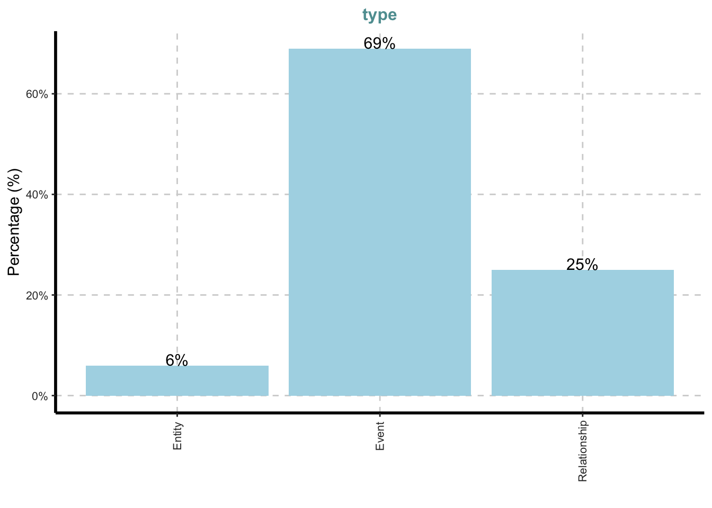
[[2]]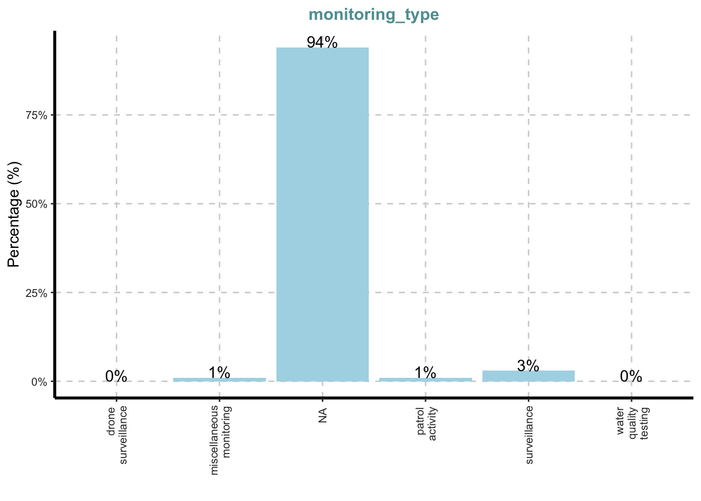
[[3]]
[[4]]
[[5]]
[[6]]
[[7]]
[[8]]
[[9]]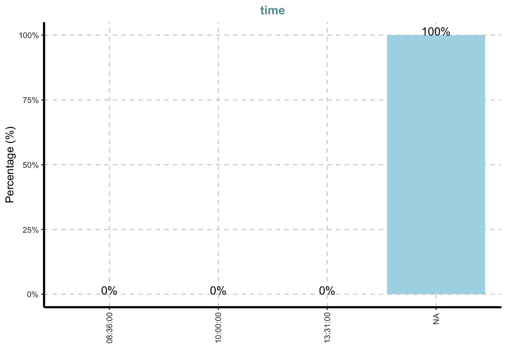
[[10]]
[[11]]
[[12]]
[[13]]
[[14]]
The code chunk below uses ExpCATViz() of SmartEDA package to reveal the frequency distribution of all categorical fields in mc3_edges tibble dataframe.
ExpCatViz(data=mc3_edges,
col="lightblue")[[1]]
3 Data Wrangling
3.1 Cleaning the nodes table
This block cleans the mc3_nodes table by first converting the id field to character type to ensure consistency. It then filters out any rows where the id is missing and removes duplicate entries, keeping only the first occurrence for each unique id. Finally, it drops the unnecessary thing_collected column, leaving a cleaned node dataset named mc3_nodes_cleaned that is ready for further processing.
mc3_nodes_cleaned <- mc3_nodes %>%
mutate(id = as.character(id)) %>%
filter(!is.na(id)) %>%
distinct(id, .keep_all = TRUE) %>%
select(-thing_collected)3.2 Cleaning the edges table
This block processes the mc3_edges table by renaming the source and target fields to from_id and to_id respectively, making the naming more intuitive. It ensures both of these fields are of character type and filters the data to keep only the edges where both the from_id and to_id exist in the cleaned node list (mc3_nodes_cleaned). Any records with missing from_id or to_id are also excluded, resulting in a cleaned edge dataset called mc3_edges_cleaned.
mc3_edges_cleaned <- mc3_edges %>%
rename(from_id = source, to_id = target) %>%
mutate(across(c(from_id, to_id), as.character)) %>%
filter(from_id %in% mc3_nodes_cleaned$id, to_id %in% mc3_nodes_cleaned$id) %>%
filter(!is.na(from_id), !is.na(to_id))3.3 Creating node-to-index mapping
In this part, the code creates a lookup table that maps each node’s id to its row index within the cleaned node list. This is done by adding a .row_id column using the row_number() function. The resulting node_index_lookup table provides a reference for converting character node IDs into numerical indices, which will be needed when preparing the edge list for graph construction.
node_index_lookup <- mc3_nodes_cleaned %>%
mutate(.row_id = row_number()) %>%
select(id, .row_id)3.4 Replacing edge node IDs with indices
Here, the cleaned edge list (mc3_edges_cleaned) is joined with the node_index_lookup table to replace from_id and to_id with their corresponding numerical indices. The code performs two left joins—one for the source node and one for the target node—followed by renaming the resulting .row_id fields to from and to. Only the edges where both ends successfully map to valid indices are kept, and the final indexed edge list is saved as mc3_edges_indexed.
mc3_edges_indexed <- mc3_edges_cleaned %>%
left_join(node_index_lookup, by = c("from_id" = "id")) %>%
rename(from = .row_id) %>%
left_join(node_index_lookup, by = c("to_id" = "id")) %>%
rename(to = .row_id) %>%
select(from, to, is_inferred, type) %>%
filter(!is.na(from) & !is.na(to))3.5 Subsetting nodes used by edges
This block identifies which nodes are actually referenced in the edge list by collecting all unique from and to indices from mc3_edges_indexed. It then subsets the cleaned node list to include only these referenced nodes, ensuring that no orphaned or unused nodes are included. A new, consecutive index (new_index) is assigned to these final nodes, resulting in the refined node table mc3_nodes_final.
used_node_indices <- sort(unique(c(mc3_edges_indexed$from, mc3_edges_indexed$to)))
mc3_nodes_final <- mc3_nodes_cleaned %>%
slice(used_node_indices) %>%
mutate(new_index = row_number())3.6 Rebuilding old-to-new index mapping
To keep the edge list aligned with the updated node indices, this code creates a new lookup table (old_to_new_index) that maps the original indices used in mc3_edges_indexed to the newly assigned consecutive indices in mc3_nodes_final. This mapping ensures consistency between the node and edge tables when reconstructing the final graph.
old_to_new_index <- tibble(
old_index = used_node_indices,
new_index = seq_along(used_node_indices)
)3.7 Updating edge indices
In this step, the mc3_edges_indexed table is joined with the old_to_new_index table to update the from and to indices, replacing them with the new consecutive indices assigned to the final node list. The updated edge list is renamed as mc3_edges_final, which contains only the necessary fields (from, to, is_inferred, and type) and is ready for graph construction.
mc3_edges_final <- mc3_edges_indexed %>%
left_join(old_to_new_index, by = c("from" = "old_index")) %>%
rename(from_new = new_index) %>%
left_join(old_to_new_index, by = c("to" = "old_index")) %>%
rename(to_new = new_index) %>%
select(from = from_new, to = to_new, is_inferred, type)3.8 Building the tidygraph object
This block constructs the final tidygraph object, mc3_graph, using the cleaned and reindexed node table (mc3_nodes_final) and edge table (mc3_edges_final). The tbl_graph() function from the tidygraph package creates a directed graph structure, making it ready for network analysis, centrality calculations, visualizations, or other graph-based operations.
mc3_graph <- tbl_graph(
nodes = mc3_nodes_final,
edges = mc3_edges_final,
directed = TRUE
)3.9 Extracting node and edge tables for time analysis
After building the graph, this block extracts the node and edge tables from mc3_graph as tibble objects. These tables are saved as nodes and edges, respectively, and are intended for downstream data analyses that focus on time-related features, such as activity trends or temporal patterns.
nodes <- as_tibble(mc3_graph, active = "nodes")
edges <- as_tibble(mc3_graph, active = "edges")3.10 Processing time fields and filtering communication nodes
Finally, this block enriches the nodes table by parsing and converting the various time-related fields (timestamp, start_date, end_date, and submission_date) into appropriate date and datetime formats using the lubridate package. It also extracts the hour and weekday components from the main timestamp, adding them as new variables. The dataset is then filtered to retain only nodes classified as Communication type and with non-missing timestamps, resulting in the comm_nodes table specifically tailored for communication-based temporal analyses.
nodes <- nodes %>%
mutate(
timestamp = ymd_hms(timestamp, quiet = TRUE),
date = as.Date(timestamp),
start_date = ymd(start_date, quiet = TRUE),
end_date = ymd(end_date, quiet = TRUE),
submission_date = ymd(submission_date, quiet = TRUE),
hour = hour(timestamp),
weekday = wday(timestamp, label = TRUE)
)
comm_nodes <- nodes %>%
filter(sub_type == "Communication", !is.na(timestamp))MC3 Q1
sub-question a
# ap1
hourly_counts <- comm_nodes %>%
group_by(date, hour) %>%
summarise(message_count = n(), .groups = "drop")
# heatmap
ap1 <- ggplot(hourly_counts, aes(x = hour, y = factor(date), fill = message_count)) +
geom_tile(color = "white") +
geom_text(aes(label = message_count), color = "white", size = 3) +
scale_fill_viridis_c(option = "plasma") +
labs(
title = "Hourly Message Count by Day",
x = "Hour of Day",
y = "Date",
fill = "Message Count"
) +
theme_minimal()#ap2
violin_data <- comm_nodes %>%
select(date, hour)
# ridgeline + jitter
ap2 <- ggplot(violin_data, aes(x = hour, y = factor(date), fill = factor(date))) +
geom_density_ridges(
alpha = 0.6,
scale = 1,
jittered_points = TRUE,
point_shape = "|",
point_size = 1,
position = "raincloud"
) +
labs(
title = "Hourly Message Distribution by Day (Ridgeline Plot with Jitter)",
x = "Hour of Day",
y = "Date"
) +
theme_minimal() +
theme(legend.position = "none")ap3 <- ggplot(comm_nodes, aes(x = hour)) +
geom_density(fill = "skyblue", alpha = 0.6) +
labs(
title = "Hourly Message Density Across All Days",
x = "Hour of Day",
y = "Density"
) +
theme_minimal() +
scale_x_continuous(breaks = 0:23)(ap1 / ap3) | ap2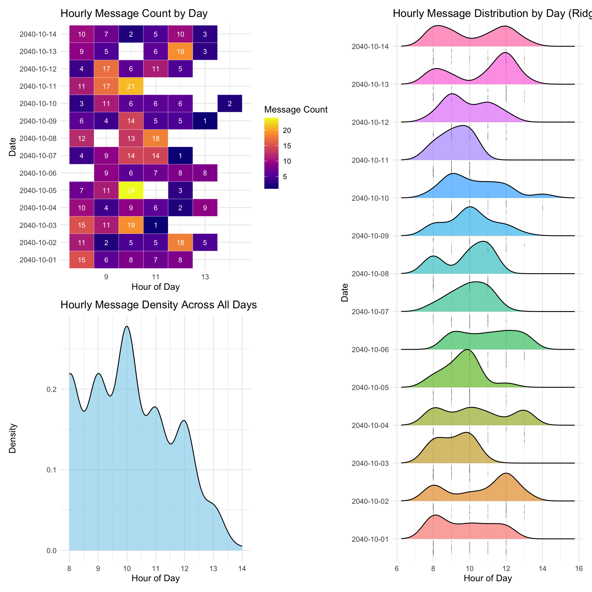
sub-question b
# data prepare for sub-question b
split_date <- min(comm_nodes$date) + 6
comm_nodes <- comm_nodes %>%
mutate(week_group = if_else(date <= split_date, "Week 1", "Week 2"))
daily_hourly_counts <- comm_nodes %>%
group_by(date, hour) %>%
summarise(message_count = n(), .groups = "drop")
weekly_hourly_counts <- comm_nodes %>%
group_by(week_group, hour) %>%
summarise(message_count = n(), .groups = "drop")
weekly_counts <- comm_nodes %>%
group_by(week_group) %>%
summarise(message_count = n(), .groups = "drop") %>%
mutate(
fraction = message_count / sum(message_count),
label = paste0(week_group, "\n", message_count)
)
hourly_counts <- comm_nodes %>%
group_by(week_group, date, hour) %>%
summarise(message_count = n(), .groups = "drop")# (Pie Chart)
bp1 <- ggplot(weekly_counts, aes(x = "", y = fraction, fill = week_group)) +
geom_col(width = 1, color = "white") +
coord_polar(theta = "y") +
geom_text(aes(label = label), position = position_stack(vjust = 0.5)) +
labs(
title = "Total Messages by Week",
x = NULL,
y = NULL
) +
theme_void() +
theme(legend.position = "none")bp2 <- ggplot(weekly_hourly_counts, aes(x = hour, y = message_count, color = week_group)) +
geom_line(size = 1.2) +
geom_point(size = 2) +
labs(
title = "Hourly Message Trend by Week",
x = "Hour of Day",
y = "Total Messages",
color = "Week"
) +
theme_minimal() +
scale_x_continuous(breaks = 0:23)# (Violin + Jitter)
bp3 <- ggplot(comm_nodes, aes(x = week_group, y = hour, fill = week_group)) +
geom_violin(alpha = 0.6, scale = "width") +
geom_jitter(width = 0.1, alpha = 0.4, size = 1) +
labs(
title = "Hourly Message Distribution by Week",
x = "Week",
y = "Hour of Day"
) +
theme_minimal() +
theme(legend.position = "none")# Stacked Area Char
bp4 <- ggplot(daily_hourly_counts, aes(x = date, y = message_count, fill = factor(hour))) +
geom_area() +
labs(
title = "Daily Message Volume by Hour",
x = "Date",
y = "Total Messages",
fill = "Hour of Day"
) +
theme_minimal()bp1/bp3 | bp2/bp4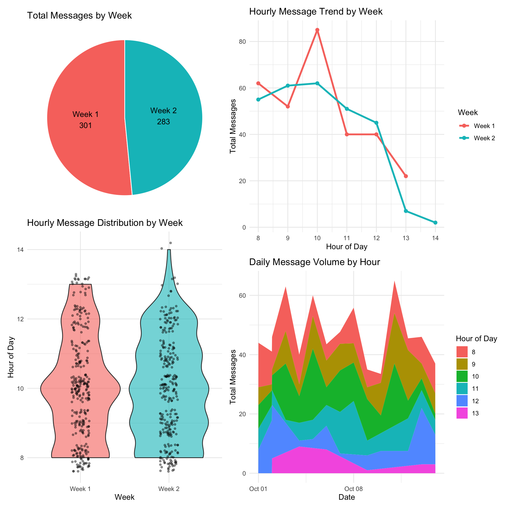
sub-question c
target_entity <- "Elise"
target_id <- nodes %>%
filter(label == target_entity) %>%
pull(id)
ig_mc3 <- as.igraph(mc3_graph)
ego_list <- make_ego_graph(ig_mc3, order = 2, nodes = which(mc3_nodes_final$id == target_id), mode = "all")
ego_net <- ego_list[[1]]
ego_simple <- simplify(ego_net, remove.multiple = TRUE, remove.loops = TRUE)
ego_tbl <- as_tbl_graph(ego_simple) %>%
mutate(
degree = centrality_degree(),
betweenness = centrality_betweenness(),
pagerank = centrality_pagerank()
)
if (!"type" %in% colnames(as.data.frame(ego_tbl, what = "vertices"))) {
ego_tbl <- ego_tbl %>% mutate(type = "Node")
}
if (!"subtype" %in% colnames(as.data.frame(ego_tbl, what = "edges"))) {
ego_tbl <- ego_tbl %>% activate(edges) %>% mutate(subtype = "default")
}
top_influencers <- ego_tbl %>%
activate(nodes) %>%
as_tibble() %>%
arrange(desc(pagerank)) %>%
filter(id != target_id) %>%
slice_head(n = 5) %>%
select(label, degree, betweenness, pagerank)
print(top_influencers)# A tibble: 5 × 4
label degree betweenness pagerank
<chr> <dbl> <dbl> <dbl>
1 Mako 5 245. 0.0866
2 V. Miesel Shipping 3 146 0.0583
3 Colleagues 0 0 0.0398
4 Nadia Conti 2 7 0.0382
5 Monitoring 0 0 0.0342ggraph(ego_tbl, layout = "fr") +
geom_edge_link(
aes(color = subtype),
alpha = 0.5,
arrow = grid::arrow(type = "closed", length = unit(2, "mm")),
end_cap = circle(3, "mm")
) +
geom_node_point(
aes(size = pagerank, color = type, shape = type),
show.legend = TRUE
) +
geom_node_text(
aes(label = label),
repel = TRUE,
size = 3
) +
scale_size_continuous(range = c(3, 10)) +
theme_graph(base_family = "Arial") +
labs(
title = paste("2-hop Influence Network of", target_entity),
subtitle = "Node size reflects PageRank; color/shape reflects Type"
)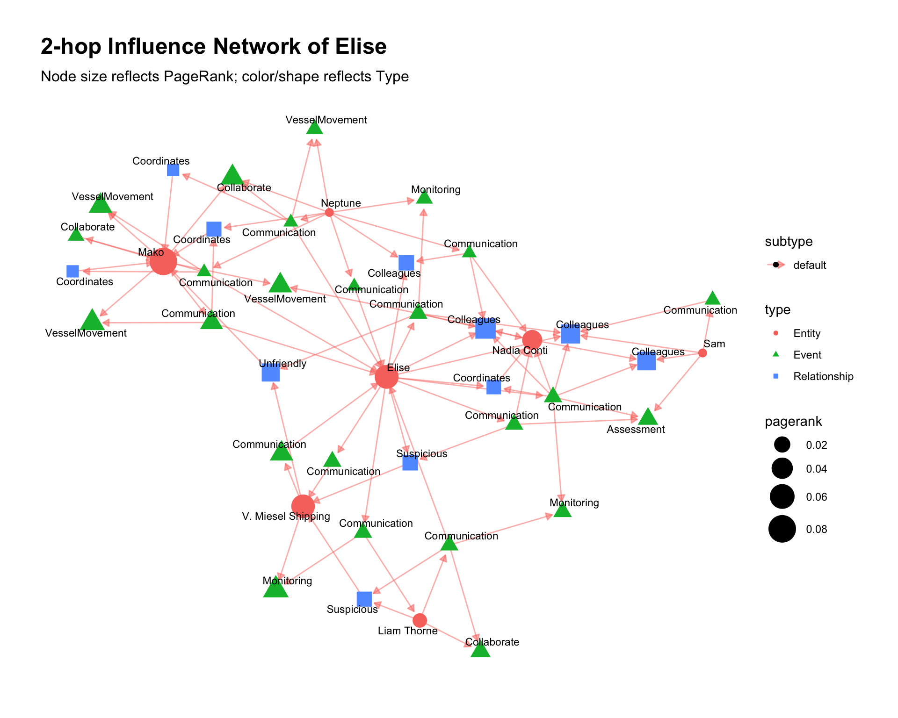
ig_mc3 <- as.igraph(mc3_graph)
target_index <- which(mc3_nodes_final$id == target_id)
ego_net_tbl <- make_ego_graph(ig_mc3, order = 2, nodes = target_index, mode = "all")[[1]] %>%
as_tbl_graph() %>%
mutate(
degree = centrality_degree(),
betweenness = centrality_betweenness(),
pagerank = centrality_pagerank()
)
if (!"type" %in% colnames(as.data.frame(ego_net_tbl, what = "vertices"))) {
ego_net_tbl <- ego_net_tbl %>% mutate(type = "Node")
}
if (!"subtype" %in% colnames(as.data.frame(ego_net_tbl, what = "edges"))) {
ego_net_tbl <- ego_net_tbl %>% activate(edges) %>% mutate(subtype = "default")
}
top_influencers <- ego_net_tbl %>%
activate(nodes) %>%
as_tibble() %>%
arrange(desc(betweenness)) %>%
filter(id != target_id) %>%
slice_head(n = 5) %>%
select(label, degree, betweenness, pagerank)
print(top_influencers)# A tibble: 5 × 4
label degree betweenness pagerank
<chr> <dbl> <dbl> <dbl>
1 Mako 5 245. 0.0866
2 Communication 3 179 0.0256
3 V. Miesel Shipping 3 146 0.0583
4 Unfriendly 1 94 0.0297
5 Communication 1 91 0.0274ggraph(ego_net_tbl, layout = "fr") +
geom_edge_link(
aes(color = subtype),
alpha = 0.5,
arrow = grid::arrow(type = "closed", length = unit(2, "mm")),
end_cap = circle(3, "mm")
) +
geom_node_point(
aes(size = betweenness, color = betweenness),
show.legend = TRUE
) +
geom_node_text(
aes(label = label),
repel = TRUE,
size = 3
) +
scale_color_viridis_c() +
scale_size_continuous(range = c(3, 10)) +
labs(
title = paste("Indirect Influence Network (Betweenness) of", target_entity),
subtitle = "Node size & color reflect Betweenness"
) +
theme_graph(base_family = "Arial")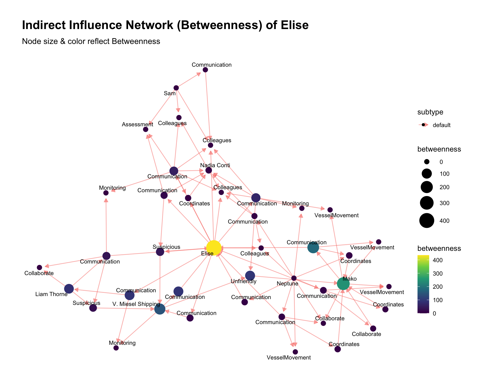
ego_2_list <- make_ego_graph(ig_mc3, order = 2, nodes = target_index, mode = "all")
ego_2_net <- ego_2_list[[1]]
ego_2_tbl <- as_tbl_graph(ego_2_net) %>%
mutate(
degree = centrality_degree(),
betweenness = centrality_betweenness()
)
direct_neighbors <- neighbors(ig_mc3, target_index, mode = "all") %>% as_ids()
ego_2_tbl <- ego_2_tbl %>%
mutate(
is_direct = id %in% mc3_nodes_final$id[direct_neighbors],
is_indirect_bridge = !is_direct & (betweenness > median(betweenness))
)
ggraph(ego_2_tbl, layout = "fr") +
geom_edge_link(alpha = 0.5) +
geom_node_point(
aes(size = betweenness, color = ifelse(is_indirect_bridge, "highlight", "non-highlight")),
show.legend = TRUE
) +
scale_color_manual(values = c("highlight" = "red", "non-highlight" = "grey")) +
geom_node_text(aes(label = label), repel = TRUE, size = 3) +
labs(
title = paste("Indirect Bridges in Influence Network of", target_entity),
subtitle = "High betweenness nodes (excluding direct neighbors) highlighted"
) +
theme_void()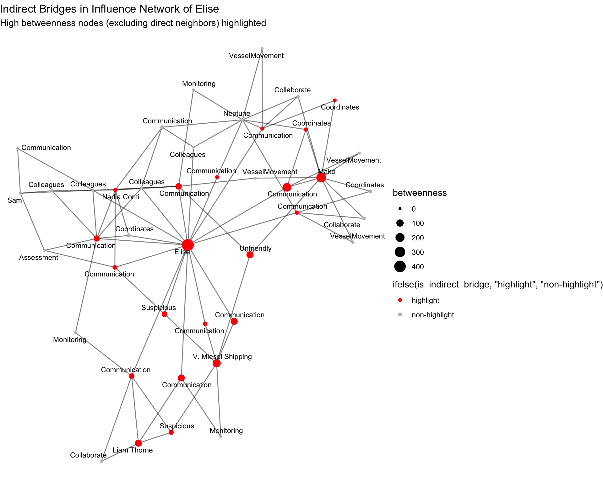
target_entity <- "Elise"
target_id <- mc3_nodes_final %>%
filter(label == target_entity) %>%
pull(id)
ig_mc3 <- as.igraph(mc3_graph)
target_index <- which(mc3_nodes_final$id == target_id)
ego_net <- make_ego_graph(ig_mc3, order = 2, nodes = target_index, mode = "all")[[1]]
ego_tbl <- as_tbl_graph(ego_net) %>%
mutate(degree = centrality_degree(), betweenness = centrality_betweenness(), pagerank = centrality_pagerank())
nodes_vis <- ego_tbl %>%
as_tibble() %>%
mutate(id = row_number(),
title = paste0("Label: ", label, "<br>Degree: ", round(degree, 2), "<br>Betweenness: ", round(betweenness, 2), "<br>PageRank: ", round(pagerank, 4)),
value = pagerank * 50) %>%
select(id, label, title, value)
edges_vis <- ego_tbl %>%
activate(edges) %>%
as_tibble() %>%
mutate(from = as.numeric(from), to = as.numeric(to)) %>%
select(from, to)
visNetwork(nodes_vis, edges_vis, width = "100%", height = "600px") %>%
visNodes(shape = "dot", scaling = list(min = 10, max = 50)) %>%
visEdges(arrows = "to", color = list(color = "gray")) %>%
visOptions(highlightNearest = TRUE, nodesIdSelection = TRUE) %>%
visLayout(randomSeed = 123)igraph_nodes <- mc3_nodes_final %>%
transmute(id = as.character(new_index),
name = as.character(new_index),
label = label,
sub_type = sub_type)
igraph_edges <- mc3_edges_final %>%
transmute(from = as.character(from),
to = as.character(to),
type = type)
g <- graph_from_data_frame(d = igraph_edges, vertices = igraph_nodes, directed = TRUE)
target_entity <- "Elise"
target_index <- which(V(g)$label == target_entity)
ego_2 <- make_ego_graph(g, order = 2, nodes = target_index, mode = "all")[[1]]
V(ego_2)$degree <- degree(ego_2)
V(ego_2)$betweenness <- betweenness(ego_2)
V(ego_2)$pagerank <- page_rank(ego_2)$vector
nodes_df <- data.frame(
id = V(ego_2)$name,
label = V(ego_2)$label,
group = V(ego_2)$sub_type,
title = paste0("<p><b>", V(ego_2)$label, "</b><br>Type: ", V(ego_2)$sub_type,
"<br>Degree: ", round(V(ego_2)$degree, 2),
"<br>Betweenness: ", round(V(ego_2)$betweenness, 2),
"<br>PageRank: ", round(V(ego_2)$pagerank, 4), "</p>"),
shape = ifelse(V(ego_2)$sub_type == "Person", "dot",
ifelse(V(ego_2)$sub_type == "Organization", "square",
ifelse(V(ego_2)$sub_type == "Vessel", "triangle", "ellipse"))),
value = V(ego_2)$pagerank * 50
)
edges_df <- as_data_frame(ego_2, what = "edges") %>%
mutate(color = ifelse(type == "sent", "blue",
ifelse(type == "received", "green", "gray"))) %>%
rename(from = from, to = to)
visNetwork(nodes_df, edges_df, width = "100%", height = "700px") %>%
visNodes(scaling = list(min = 10, max = 50)) %>%
visEdges(arrows = "to", color = list(color = edges_df$color)) %>%
visOptions(highlightNearest = TRUE, nodesIdSelection = TRUE) %>%
visLegend() %>%
visLayout(randomSeed = 123)ego_2 <- make_ego_graph(g, order = 2, nodes = target_index, mode = "all")[[1]]
V(ego_2)$betweenness <- betweenness(ego_2)
top_bridge <- sort(V(ego_2)$betweenness, decreasing = TRUE)[1:5]
print(top_bridge)[1] 435.3333 244.6667 179.0000 146.0000 94.0000nodes_df <- data.frame(
id = V(ego_2)$name,
label = V(ego_2)$label,
group = V(ego_2)$sub_type,
title = paste0("<b>", V(ego_2)$label, "</b><br>Betweenness: ", round(V(ego_2)$betweenness, 2)),
shape = ifelse(V(ego_2)$sub_type == "Person", "dot",
ifelse(V(ego_2)$sub_type == "Organization", "square",
ifelse(V(ego_2)$sub_type == "Vessel", "triangle", "ellipse"))),
value = V(ego_2)$betweenness * 10
)
edges_df <- as_data_frame(ego_2, what = "edges") %>%
mutate(color = ifelse(type == "sent", "blue",
ifelse(type == "received", "green", "gray"))) %>%
rename(from = from, to = to)
visNetwork(nodes_df, edges_df, width = "100%", height = "700px") %>%
visNodes(scaling = list(min = 10, max = 50)) %>%
visEdges(arrows = "to", color = list(color = edges_df$color)) %>%
visOptions(highlightNearest = TRUE, nodesIdSelection = TRUE) %>%
visLegend() %>%
visLayout(randomSeed = 123)备用图库
sq-a
# 绘制：每天的小时密度曲线（多条线叠加）
ggplot(comm_nodes, aes(x = hour, color = factor(date), fill = factor(date))) +
geom_density(alpha = 0.3) +
labs(
title = "Hourly Message Density by Day",
x = "Hour of Day",
y = "Density",
color = "Date",
fill = "Date"
) +
theme_minimal() +
scale_x_continuous(breaks = 0:23)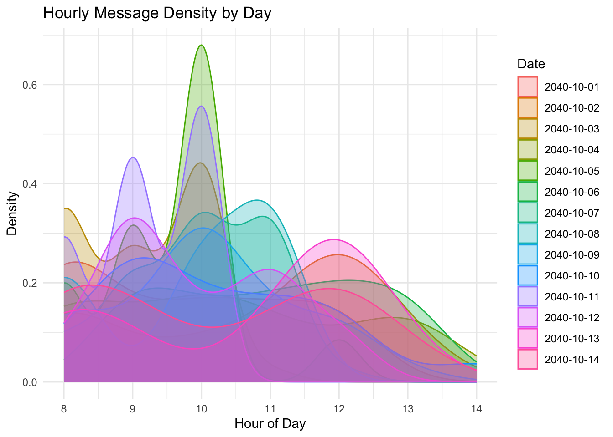
library(dplyr)
library(ggplot2)
# Step 1: 按天统计每个小时的频率分布
hourly_day_counts <- comm_nodes %>%
group_by(date, hour) %>%
summarise(count = n(), .groups = "drop") %>%
group_by(date) %>%
mutate(freq = count / sum(count)) # 每天内的比例
# Step 2: 按小时求所有天的平均频率
avg_hourly_density <- hourly_day_counts %>%
group_by(hour) %>%
summarise(avg_freq = mean(freq), .groups = "drop")
ggplot(avg_hourly_density, aes(x = hour, y = avg_freq)) +
geom_ribbon(aes(ymin = 0, ymax = avg_freq), fill = "skyblue", alpha = 0.4) +
geom_smooth(se = FALSE, color = "steelblue", size = 1.2, method = "loess") +
labs(
title = "Average Hourly Message Density Across Days (Smoothed + Fill)",
x = "Hour of Day",
y = "Average Density (Proportion)"
) +
theme_minimal() +
scale_x_continuous(breaks = 0:23)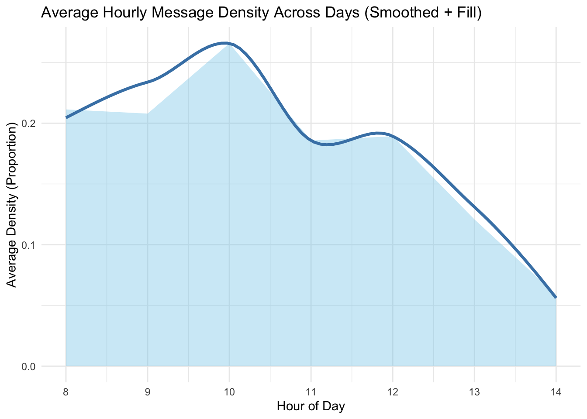
sq-b
sq-c
# 准备 igraph 数据
igraph_nodes <- mc3_nodes_final %>%
transmute(
id = as.character(new_index), # 唯一 id
name = as.character(new_index), # igraph 内部用 name（注意不是 label）
label = label,
sub_type = sub_type
)
igraph_edges <- mc3_edges_final %>%
transmute(
from = as.character(from),
to = as.character(to),
type = type
)
# 构建 igraph
g <- graph_from_data_frame(d = igraph_edges, vertices = igraph_nodes, directed = TRUE)
# 选择目标节点
target_entity <- "Elise"
target_index <- which(V(g)$label == target_entity)
if (length(target_index) == 0) {
stop(paste("Target entity", target_entity, "not found in nodes"))
}
# 提取 2-hop ego 网络
ego_2 <- make_ego_graph(g, order = 2, nodes = target_index, mode = "all")[[1]]
# 检查顶点属性实际存在的名字
vertex_attrs <- vertex_attr_names(ego_2)
print(paste("Vertex attributes in ego graph:", paste(vertex_attrs, collapse = ", ")))[1] "Vertex attributes in ego graph: name, label, sub_type"# 准备 visNetwork 节点表
nodes_df <- data.frame(
id = V(ego_2)$name, # ⚠️ 保险用 name，而不是 id
label = V(ego_2)$label,
group = V(ego_2)$sub_type,
title = paste0("<p><b>", V(ego_2)$label, "</b><br>Type: ", V(ego_2)$sub_type, "</p>"),
shape = ifelse(V(ego_2)$sub_type == "Person", "dot",
ifelse(V(ego_2)$sub_type == "Organization", "square",
ifelse(V(ego_2)$sub_type == "Vessel", "triangle", "ellipse")))
)
# 准备 visNetwork 边表
edges_df <- as_data_frame(ego_2, what = "edges") %>%
mutate(color = ifelse(type == "sent", "blue",
ifelse(type == "received", "green", "gray"))) %>%
rename(from = from, to = to)
# 绘制交互式网络图
visNetwork(nodes_df, edges_df, width = "100%", height = "700px") %>%
visEdges(arrows = "to") %>%
visOptions(highlightNearest = TRUE, nodesIdSelection = TRUE) %>%
visLegend() %>%
visLayout(randomSeed = 123)target_entity <- "Elise"
ig_mc3 <- as.igraph(mc3_graph)
target_index <- which(mc3_nodes_final$id == target_entity)
ego_2_list <- make_ego_graph(ig_mc3, order = 2, nodes = target_index, mode = "all")
ego_2_net <- ego_2_list[[1]]
ego_2_simple <- simplify(ego_2_net, remove.multiple = TRUE, remove.loops = TRUE)
ego_2_tbl <- as_tbl_graph(ego_2_simple) %>%
mutate(pagerank = centrality_pagerank())
if (!"type" %in% colnames(as.data.frame(ego_2_tbl, what = "vertices"))) {
ego_2_tbl <- ego_2_tbl %>% mutate(type = "Node")
}
if (!"subtype" %in% colnames(as.data.frame(ego_2_tbl, what = "edges"))) {
ego_2_tbl <- ego_2_tbl %>% activate(edges) %>% mutate(subtype = "default")
}
ggraph(ego_2_tbl, layout = "fr") +
geom_edge_link(
aes(color = subtype),
alpha = 0.5,
arrow = grid::arrow(type = "closed", length = unit(2, "mm")),
end_cap = circle(3, "mm")
) +
geom_node_point(
aes(color = type, shape = type, size = pagerank),
show.legend = TRUE
) +
geom_node_text(
aes(label = label),
repel = TRUE,
size = 3
) +
theme_graph(base_family = "Arial") +
labs(
title = paste("2-hop Influence Network of", target_entity),
subtitle = "Node size & color reflect PageRank"
)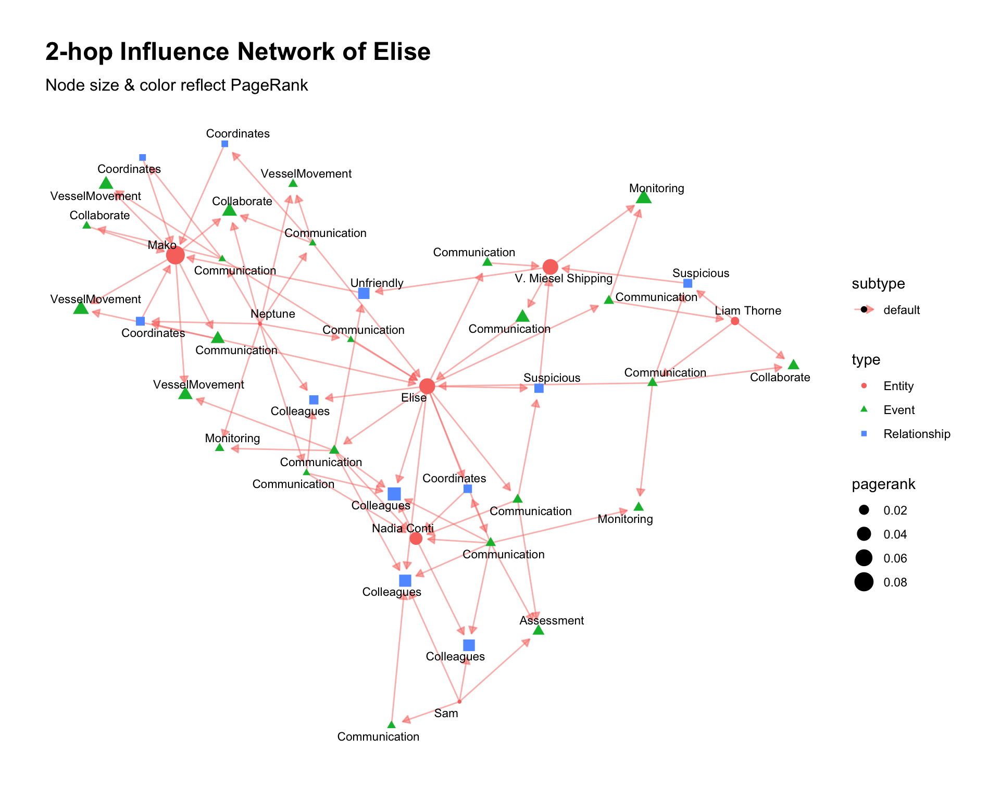
target_entity <- "Elise"
target_id <- nodes %>%
filter(label == target_entity) %>%
pull(id)
ig_mc3 <- as.igraph(mc3_graph)
ego_list <- make_ego_graph(ig_mc3, order = 2, nodes = which(mc3_nodes_final$id == target_id), mode = "all")
ego_net <- ego_list[[1]]
ego_net_tbl <- as_tbl_graph(ego_net) %>%
mutate(
degree = centrality_degree(),
betweenness = centrality_betweenness(),
pagerank = centrality_pagerank()
)
top_influencers <- ego_net_tbl %>%
as_tibble() %>%
arrange(desc(pagerank)) %>%
filter(id != target_id) %>%
slice_head(n = 5) %>%
select(label, degree, betweenness, pagerank)
print(top_influencers)# A tibble: 5 × 4
label degree betweenness pagerank
<chr> <dbl> <dbl> <dbl>
1 Mako 5 245. 0.0866
2 V. Miesel Shipping 3 146 0.0583
3 Colleagues 0 0 0.0398
4 Nadia Conti 2 7 0.0382
5 Monitoring 0 0 0.0342ggraph(ego_net_tbl, layout = "fr") +
geom_edge_link(alpha = 0.5) +
geom_node_point(aes(size = pagerank, color = pagerank)) +
geom_node_text(aes(label = label), repel = TRUE, size = 3) +
scale_color_viridis_c() +
labs(
title = paste("Influence Network of", target_entity),
subtitle = "Node size & color reflect PageRank influence"
) +
theme_void()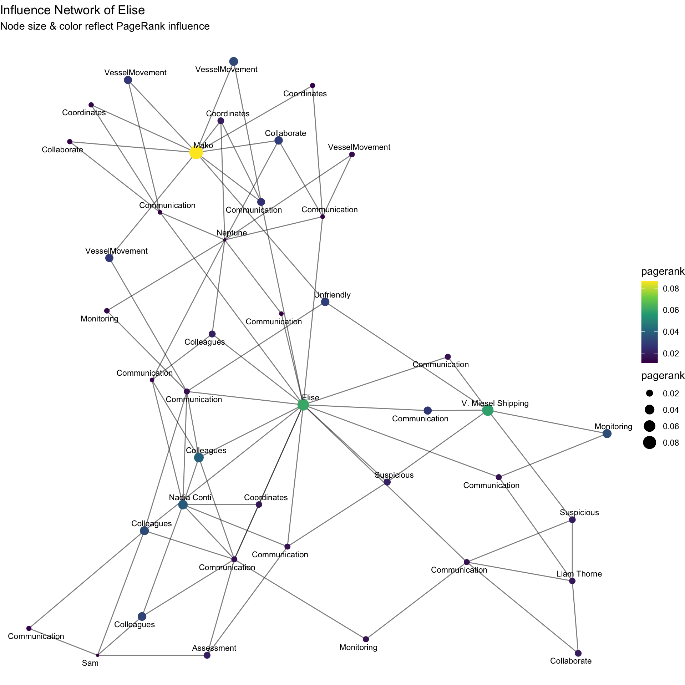
ego_2_list <- make_ego_graph(ig_mc3, order = 2, nodes = target_index, mode = "all")
ego_2_net <- ego_2_list[[1]]
ego_2_tbl <- as_tbl_graph(ego_2_net) %>%
mutate(degree = centrality_degree(), betweenness = centrality_betweenness())
direct_neighbors <- neighbors(ig_mc3, target_index, mode = "all") %>% as_ids()
ego_2_tbl <- ego_2_tbl %>%
mutate(is_direct = name %in% mc3_nodes_final$name[direct_neighbors],
is_indirect_bridge = !is_direct & (betweenness > median(betweenness)))
ggraph(ego_2_tbl, layout = "fr") +
geom_edge_link(alpha = 0.5) +
geom_node_point(aes(size = betweenness, color = ifelse(is_indirect_bridge, "highlight", "non-highlight")), show.legend = TRUE) +
scale_color_manual(values = c("highlight" = "red", "non-highlight" = "grey")) +
geom_node_text(aes(label = name), repel = TRUE, size = 3) +
labs(title = paste("Indirect Bridges in Influence Network of", target_entity),
subtitle = "High betweenness nodes (excluding direct neighbors) highlighted") +
theme_void()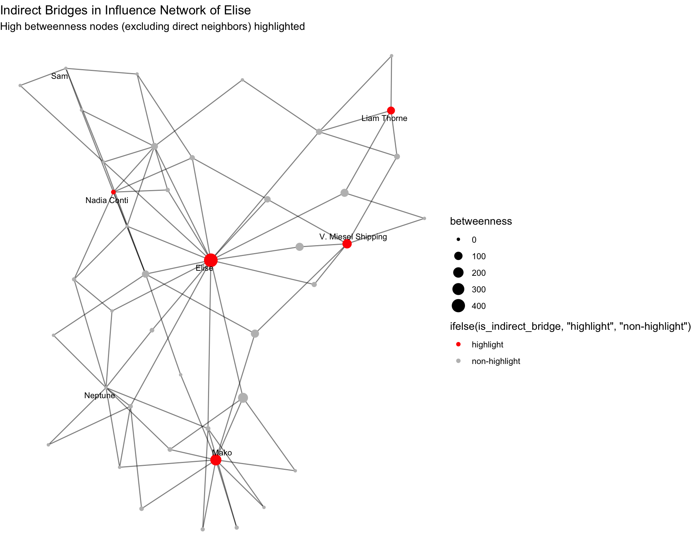
library(dplyr)
library(igraph)
library(visNetwork)
# Step 1: 定义 entity 类型
entity_types <- c("Person", "Organization", "Vessel", "Group", "Location")
# Step 2: 准备 igraph_nodes 和 igraph_edges （你已有）
# igraph_nodes <- mc3_nodes_final %>%
# transmute(id = as.character(new_index),
# name = as.character(new_index),
# label = label,
# sub_type = sub_type)
#
# igraph_edges <- mc3_edges_final %>%
# transmute(from = as.character(from),
# to = as.character(to),
# type = type)
# Step 3: 构造 from / to 对应的 sub_type
node_types <- igraph_nodes %>%
select(id, sub_type)
edges_entity_filtered <- igraph_edges %>%
left_join(node_types, by = c("from" = "id")) %>%
rename(from_sub_type = sub_type) %>%
left_join(node_types, by = c("to" = "id")) %>%
rename(to_sub_type = sub_type) %>%
filter(from_sub_type %in% entity_types, to_sub_type %in% entity_types)
# Step 4: 构建只包含 entity 的 igraph
entity_graph <- graph_from_data_frame(
d = edges_entity_filtered,
vertices = igraph_nodes %>% filter(sub_type %in% entity_types),
directed = TRUE
)
# Step 5: 计算中心性指标
V(entity_graph)$degree <- degree(entity_graph)
V(entity_graph)$betweenness <- betweenness(entity_graph)
V(entity_graph)$pagerank <- page_rank(entity_graph)$vector
# Step 6: 构造 nodes dataframe
nodes_df <- data.frame(
id = V(entity_graph)$name,
label = V(entity_graph)$label,
group = V(entity_graph)$sub_type,
title = paste0("<p><b>", V(entity_graph)$label, "</b><br>Type: ", V(entity_graph)$sub_type,
"<br>Degree: ", round(V(entity_graph)$degree, 2),
"<br>Betweenness: ", round(V(entity_graph)$betweenness, 2),
"<br>PageRank: ", round(V(entity_graph)$pagerank, 4), "</p>"),
shape = ifelse(V(entity_graph)$sub_type == "Person", "dot",
ifelse(V(entity_graph)$sub_type == "Organization", "square",
ifelse(V(entity_graph)$sub_type == "Vessel", "triangle", "ellipse"))),
value = V(entity_graph)$pagerank * 50
)
# Step 7: 构造 edges dataframe
edges_df <- as_data_frame(entity_graph, what = "edges") %>%
mutate(color = "gray") %>%
rename(from = from, to = to)
# Step 8: 绘图
visNetwork(nodes_df, edges_df, width = "100%", height = "700px") %>%
visNodes(scaling = list(min = 10, max = 50)) %>%
visEdges(arrows = "to", color = list(color = edges_df$color)) %>%
visOptions(highlightNearest = TRUE, nodesIdSelection = TRUE) %>%
visLegend() %>%
visLayout(randomSeed = 123)target_entity <- "Elise"
target_id <- nodes %>%
filter(label == target_entity) %>%
pull(id)
ig_mc3 <- as.igraph(mc3_graph)
ego_list <- make_ego_graph(ig_mc3, order = 2, nodes = which(mc3_nodes_final$id == target_id), mode = "all")
ego_net <- ego_list[[1]]
ego_net_tbl <- as_tbl_graph(ego_net) %>%
mutate(
degree = centrality_degree(),
betweenness = centrality_betweenness(),
pagerank = centrality_pagerank()
)
top_influencers <- ego_net_tbl %>%
as_tibble() %>%
arrange(desc(pagerank)) %>%
filter(id != target_id) %>%
slice_head(n = 5) %>%
select(label, degree, betweenness, pagerank)
print(top_influencers)# A tibble: 5 × 4
label degree betweenness pagerank
<chr> <dbl> <dbl> <dbl>
1 Mako 5 245. 0.0866
2 V. Miesel Shipping 3 146 0.0583
3 Colleagues 0 0 0.0398
4 Nadia Conti 2 7 0.0382
5 Monitoring 0 0 0.0342ggraph(ego_net_tbl, layout = "fr") +
geom_edge_link(alpha = 0.5) +
geom_node_point(aes(size = pagerank, color = pagerank)) +
geom_node_text(aes(label = label), repel = TRUE, size = 3) +
scale_color_viridis_c() +
labs(
title = paste("Influence Network of", target_entity),
subtitle = "Node size & color reflect PageRank influence"
) +
theme_void()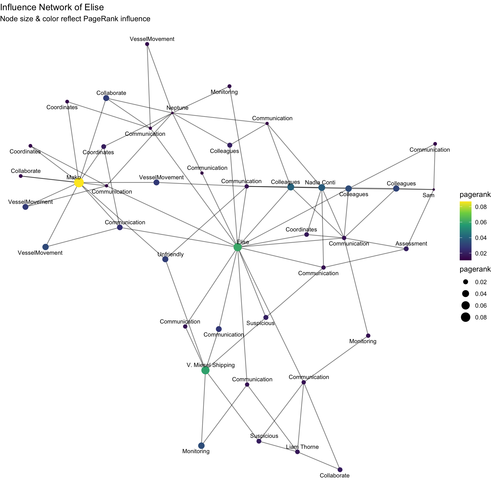
ig_mc3 <- as.igraph(mc3_graph)
target_index <- which(mc3_nodes_final$id == target_id)
ego_net_tbl <- make_ego_graph(ig_mc3, order = 2, nodes = target_index, mode = "all")[[1]] %>%
as_tbl_graph() %>%
mutate(
degree = centrality_degree(),
betweenness = centrality_betweenness(),
pagerank = centrality_pagerank()
)
ggraph(ego_net_tbl, layout = "fr") +
geom_edge_link(alpha = 0.5) +
geom_node_point(aes(size = betweenness, color = betweenness)) +
geom_node_text(aes(label = label), repel = TRUE, size = 3) +
scale_color_viridis_c() +
labs(
title = paste("Indirect Influence Network (Betweenness) of", target_entity),
subtitle = "Node size & color = Betweenness"
) +
theme_void()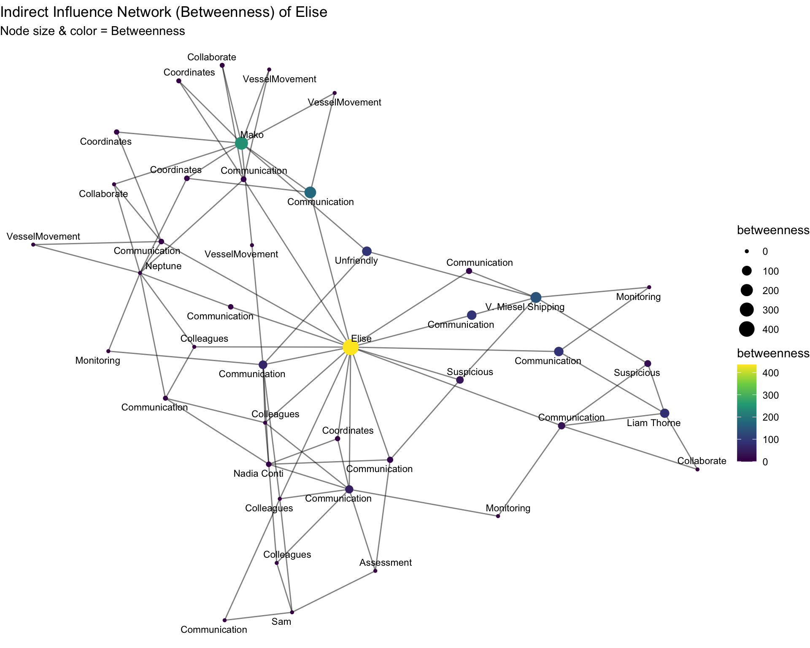
fix_graph_duplicates <- function(graph) {
if ("tbl_graph" %in% class(graph)) {
ig <- as.igraph(graph)
} else if ("igraph" %in% class(graph)) {
ig <- graph
} else {
stop("Input must be an igraph or tidygraph object!")
}
node_names <- V(ig)$name
if (any(is.na(node_names) | node_names == "")) {
node_names[is.na(node_names) | node_names == ""] <- paste0("NA_", seq_len(sum(is.na(node_names) | node_names == "")))
V(ig)$name <- node_names
}
if (any(duplicated(node_names))) {
V(ig)$name <- make.unique(node_names)
}
simplify(ig, remove.multiple = TRUE, remove.loops = TRUE) %>%
tidygraph::as_tbl_graph()
}
plot_relationship_graph <- function(graph,
emphasize_nodes = c(),
layout = "fr",
circular = FALSE,
title = NULL,
subtitle = NULL,
node_size = 6,
arrow_margin = 3) {
nodes <- as_data_frame(graph, what = "vertices")
edges <- as_data_frame(graph, what = "edges")
if (!"subtype" %in% colnames(edges)) {
edges$subtype <- "default"
graph <- graph %>% activate(edges) %>% mutate(subtype = "default")
}
ggraph(graph, layout = layout, circular = circular) +
geom_node_point(aes(color = type, shape = type, size = pagerank), show.legend = TRUE) +
geom_node_text(aes(label = label), repel = TRUE, size = 3) +
geom_edge_link(aes(color = subtype), alpha = 0.5,
arrow = grid::arrow(type = "closed", length = unit(2, "mm")),
end_cap = circle(arrow_margin, "mm")) +
theme_graph(base_family = "Arial") +
labs(title = title, subtitle = subtitle)
}
ig_mc3 <- as.igraph(mc3_graph)
target_index <- which(mc3_nodes_final$id == target_id)
ego_2_list <- make_ego_graph(ig_mc3, order = 2, nodes = target_index, mode = "all")
ego_2_net <- ego_2_list[[1]]
ego_2_fixed <- fix_graph_duplicates(ego_2_net)
ego_2_tbl <- ego_2_fixed %>%
mutate(pagerank = centrality_pagerank())
plot_relationship_graph(
graph = ego_2_tbl,
emphasize_nodes = c(target_entity),
layout = "fr",
node_size = 6,
title = paste("2-hop Influence Network of", target_entity),
subtitle = "Node size & color reflect PageRank"
)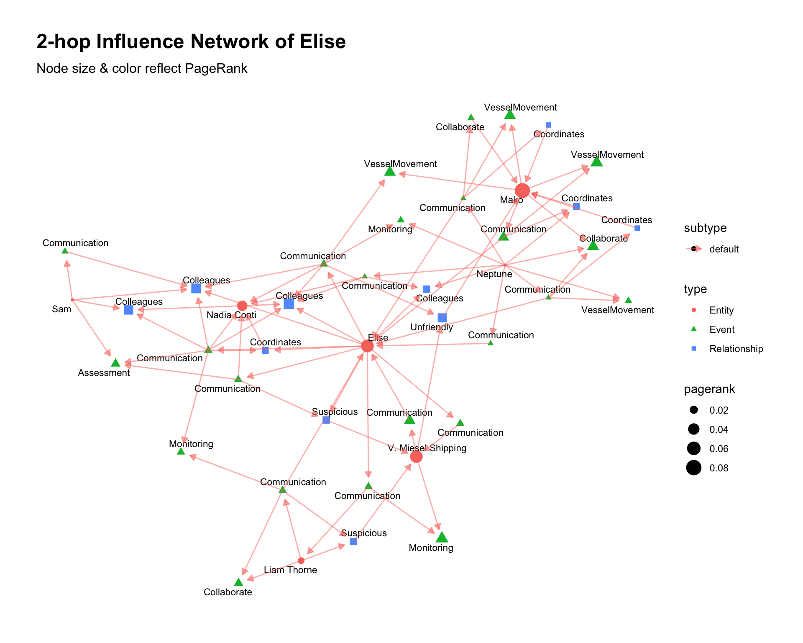
ego_2_list <- make_ego_graph(ig_mc3, order = 2, nodes = target_index, mode = "all")
ego_2_net <- ego_2_list[[1]]
ego_2_tbl <- as_tbl_graph(ego_2_net) %>%
mutate(degree = centrality_degree(), betweenness = centrality_betweenness())
direct_neighbors <- neighbors(ig_mc3, target_index, mode = "all") %>% as_ids()
ego_2_tbl <- ego_2_tbl %>%
mutate(is_direct = name %in% mc3_nodes_final$name[direct_neighbors],
is_indirect_bridge = !is_direct & (betweenness > median(betweenness)))
ggraph(ego_2_tbl, layout = "fr") +
geom_edge_link(alpha = 0.5) +
geom_node_point(aes(size = betweenness, color = ifelse(is_indirect_bridge, "highlight", "non-highlight")), show.legend = TRUE) +
scale_color_manual(values = c("highlight" = "red", "non-highlight" = "grey")) +
geom_node_text(aes(label = name), repel = TRUE, size = 3) +
labs(title = paste("Indirect Bridges in Influence Network of", target_entity),
subtitle = "High betweenness nodes (excluding direct neighbors) highlighted") +
theme_void()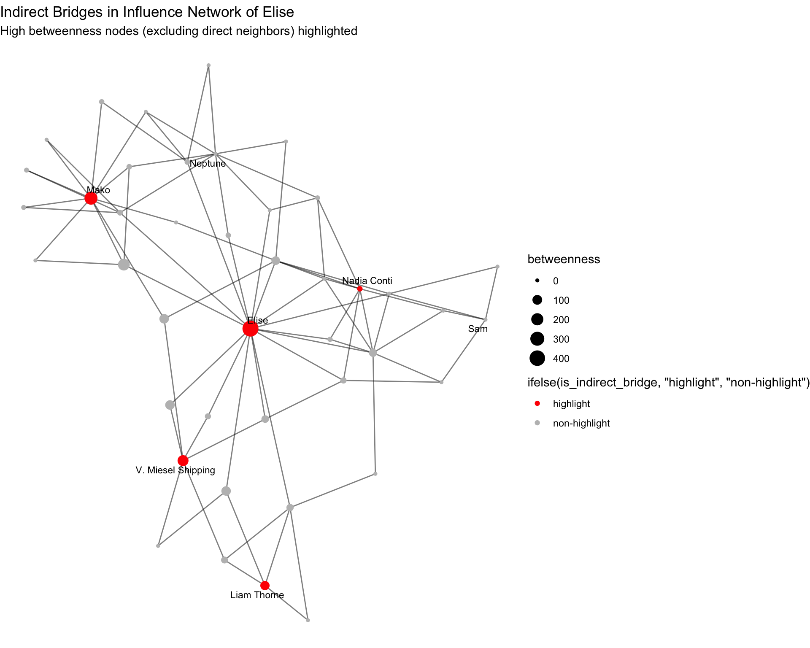
sent_edges <- edges %>%
filter(type == "sent") %>%
select(source_entity = from, event = to)
received_edges <- edges %>%
filter(type == "received") %>%
select(event = from, target_entity = to)
comm_edges <- sent_edges %>%
inner_join(received_edges, by = "event") %>%
select(from = source_entity, to = target_entity)
entity_nodes <- nodes %>%
filter(type == "Entity") %>%
select(new_index, id, label)
comm_graph <- tbl_graph(
nodes = entity_nodes,
edges = comm_edges,
directed = TRUE
) %>%
mutate(degree = centrality_degree(mode = "in"), pagerank = centrality_pagerank())
focus_entity <- "Elise"
focus_index <- which(V(comm_graph)$label == focus_entity)
ego_graph <- make_ego_graph(comm_graph, order = 1, nodes = focus_index, mode = "all")[[1]]
set.seed(1234)
ggraph(ego_graph, layout = "kk") +
geom_edge_link(arrow = arrow(length = unit(3, 'mm')), end_cap = circle(3, 'mm')) +
geom_node_point(aes(size = pagerank), color = "steelblue") +
geom_node_text(aes(label = label), repel = TRUE) +
labs(title = paste("Influence Network for:", focus_entity)) +
theme_graph()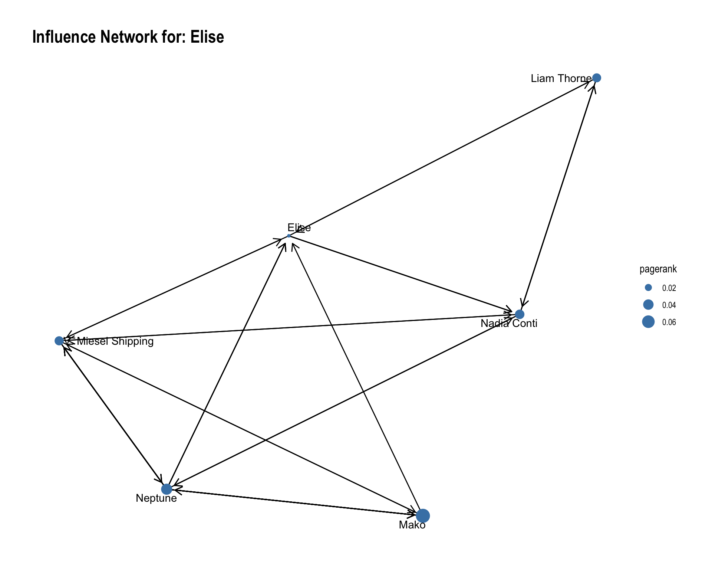
# 1️⃣ 构建 entity-to-entity edges
sent_edges <- edges %>%
filter(type == "sent") %>%
select(source_entity = from, event = to)
received_edges <- edges %>%
filter(type == "received") %>%
select(event = from, target_entity = to)
comm_edges <- sent_edges %>%
inner_join(received_edges, by = "event") %>%
select(from = source_entity, to = target_entity)
# 2️⃣ 只保留 entity nodes
entity_nodes <- nodes %>%
filter(type == "Entity") %>%
select(new_index, id, label, sub_type) %>%
mutate(new_index = as.character(new_index))
# 3️⃣ 构建 igraph
g <- graph_from_data_frame(d = comm_edges, vertices = entity_nodes, directed = TRUE)
# 4️⃣ 计算全局中心性
V(g)$global_degree <- degree(g)
V(g)$global_betweenness <- betweenness(g)
V(g)$global_pagerank <- page_rank(g)$vector
# 5️⃣ 提取 Elise ego network（2-hop）
target_entity <- "Elise"
target_index <- which(V(g)$label == target_entity)
ego_2 <- make_ego_graph(g, order = 2, nodes = target_index, mode = "all")[[1]]
# 6️⃣ 计算局部中心性（只在 ego network 内）
V(ego_2)$local_degree <- degree(ego_2)
V(ego_2)$local_betweenness <- betweenness(ego_2)
V(ego_2)$local_pagerank <- page_rank(ego_2)$vector
# 7️⃣ 整合成综合表格
summary_table <- data.frame(
label = V(ego_2)$label,
sub_type = V(ego_2)$sub_type,
local_degree = V(ego_2)$local_degree,
global_degree = V(g)$global_degree[V(g)$label %in% V(ego_2)$label],
local_betweenness = round(V(ego_2)$local_betweenness, 2),
global_betweenness = round(V(g)$global_betweenness[V(g)$label %in% V(ego_2)$label], 2),
local_pagerank = round(V(ego_2)$local_pagerank, 4),
global_pagerank = round(V(g)$global_pagerank[V(g)$label %in% V(ego_2)$label], 4)
)
print(summary_table %>% arrange(desc(global_pagerank))) label sub_type local_degree global_degree
1 Mako Vessel 93 93
2 Oceanus City Council Organization 80 82
3 Remora Vessel 61 62
4 Neptune Vessel 60 60
5 Reef Guardian Vessel 56 62
6 Himark Harbor Location 39 45
7 Nadia Conti Person 26 26
8 Green Guardians Organization 63 71
9 V. Miesel Shipping Organization 33 33
10 Boss Person 27 30
11 Liam Thorne Person 27 27
12 Sentinel Vessel 36 41
13 Mrs. Money Person 23 43
14 Paackland Harbor Location 32 32
15 Horizon Vessel 29 36
16 EcoVigil Vessel 29 29
17 Davis Person 43 43
18 The Middleman Person 16 20
19 Marlin Vessel 15 15
20 Sailor Shifts Team Organization 9 10
21 Samantha Blake Person 15 16
22 Elise Person 11 11
23 Serenity Vessel 16 16
24 Rodriguez Person 20 20
25 Osprey Vessel 9 9
26 Haacklee Harbor Location 9 9
27 Defender Vessel 6 7
28 City Officials Group 1 1
29 Knowles Vessel 5 5
30 Small Fry Person 7 7
local_betweenness global_betweenness local_pagerank global_pagerank
1 258.92 373.44 0.1098 0.0767
2 87.12 124.63 0.0823 0.0599
3 66.54 99.95 0.0725 0.0520
4 66.55 94.13 0.0647 0.0456
5 72.43 133.55 0.0478 0.0372
6 10.46 64.53 0.0397 0.0336
7 84.92 101.29 0.0471 0.0332
8 2.20 28.90 0.0342 0.0310
9 33.68 77.50 0.0434 0.0308
10 43.49 166.58 0.0368 0.0300
11 29.43 49.25 0.0430 0.0298
12 26.08 37.90 0.0431 0.0298
13 9.72 165.74 0.0276 0.0269
14 14.56 20.23 0.0369 0.0258
15 2.68 6.61 0.0319 0.0227
16 6.75 7.77 0.0298 0.0202
17 18.80 26.48 0.0283 0.0195
18 3.64 49.43 0.0206 0.0175
19 2.09 2.71 0.0218 0.0151
20 2.13 4.32 0.0192 0.0150
21 1.79 5.71 0.0197 0.0144
22 2.80 2.80 0.0185 0.0128
23 0.56 0.69 0.0179 0.0124
24 2.16 7.80 0.0134 0.0092
25 0.00 0.00 0.0119 0.0081
26 32.87 39.09 0.0116 0.0079
27 0.00 0.00 0.0079 0.0053
28 0.00 0.00 0.0068 0.0046
29 0.67 0.67 0.0066 0.0044
30 0.00 0.00 0.0052 0.0035# 8️⃣ 准备可视化（用全局 PageRank 显示大小）
V(ego_2)$name <- V(ego_2)$name %||% V(ego_2)$label
nodes_df <- data.frame(
id = V(ego_2)$name,
label = V(ego_2)$label,
group = V(ego_2)$sub_type,
title = paste0("<b>", V(ego_2)$label, "</b><br>",
"Local Degree: ", V(ego_2)$local_degree, "<br>",
"Global Degree: ", V(g)$global_degree[V(g)$label %in% V(ego_2)$label], "<br>",
"Local Betweenness: ", round(V(ego_2)$local_betweenness, 2), "<br>",
"Global Betweenness: ", round(V(g)$global_betweenness[V(g)$label %in% V(ego_2)$label], 2), "<br>",
"Local PageRank: ", round(V(ego_2)$local_pagerank, 4), "<br>",
"Global PageRank: ", round(V(g)$global_pagerank[V(g)$label %in% V(ego_2)$label], 4)),
shape = ifelse(V(ego_2)$sub_type == "Person", "dot",
ifelse(V(ego_2)$sub_type == "Organization", "square",
ifelse(V(ego_2)$sub_type == "Vessel", "triangle",
ifelse(V(ego_2)$sub_type == "Group", "diamond", "star")))),
value = V(g)$global_pagerank[V(g)$label %in% V(ego_2)$label] * 50 + 5
)
edges_df <- as_data_frame(ego_2, what = "edges") %>%
rename(from = from, to = to)
visNetwork(nodes_df, edges_df, width = "100%", height = "700px") %>%
visNodes(scaling = list(min = 5, max = 50)) %>%
visEdges(
arrows = list(to = list(enabled = TRUE, scaleFactor = 0.3)),
color = list(color = "gray")
) %>%
visOptions(
highlightNearest = TRUE,
nodesIdSelection = TRUE,
manipulation = FALSE
) %>%
visInteraction(
dragNodes = FALSE,
dragView = FALSE,
zoomView = FALSE
) %>%
visLegend() %>%
visLayout(randomSeed = 123)# 1️⃣ 提取 sent 和 received 基础表
sent_edges <- edges %>%
filter(type == "sent") %>%
select(source_entity = from, event = to)
received_edges <- edges %>%
filter(type == "received") %>%
select(event = from, target_entity = to)
# 2️⃣ 成对匹配（sent + received）
paired_edges <- sent_edges %>%
inner_join(received_edges, by = "event") %>%
select(from = source_entity, to = target_entity)
# 3️⃣ 单边 sent（实体 → event）
single_sent_edges <- sent_edges %>%
select(from = source_entity, to = event)
# 4️⃣ 单边 received（event → 实体）
single_received_edges <- received_edges %>%
select(from = event, to = target_entity)
# 5️⃣ 合并所有边并去重
all_edges <- bind_rows(paired_edges, single_sent_edges, single_received_edges) %>%
distinct()
# 6️⃣ 只保留 from 和 to 都是 entity 的边
entity_ids <- nodes %>%
filter(type == "Entity") %>%
pull(new_index) %>%
as.character()
entity_edges <- all_edges %>%
filter(as.character(from) %in% entity_ids, as.character(to) %in% entity_ids)
# 7️⃣ 构建节点表
entity_nodes <- nodes %>%
filter(type == "Entity") %>%
select(new_index, id, label, sub_type) %>%
mutate(new_index = as.character(new_index))
# 8️⃣ 构建 igraph
g <- graph_from_data_frame(d = entity_edges, vertices = entity_nodes, directed = TRUE)
# 9️⃣ 计算中心性指标（你可以选择 focus）
V(g)$pagerank <- page_rank(g)$vector
V(g)$betweenness <- betweenness(g)
V(g)$degree <- degree(g)
# 🔟 提取 ego network（例如 2-hop）
target_entity <- "Elise"
target_index <- which(V(g)$label == target_entity)
ego_graph <- make_ego_graph(g, order = 2, nodes = target_index, mode = "all")[[1]]
# 💡 确保 name 存在
V(ego_graph)$name <- V(ego_graph)$name %||% V(ego_graph)$label
# 🔧 准备 nodes_df（以 pagerank 为例，可切换 betweenness 或 degree）
nodes_df <- data.frame(
id = V(ego_graph)$name,
label = V(ego_graph)$label,
group = V(ego_graph)$sub_type,
title = paste0("<b>", V(ego_graph)$label, "</b><br>",
"Degree: ", round(V(ego_graph)$degree, 2), "<br>",
"Betweenness: ", round(V(ego_graph)$betweenness, 2), "<br>",
"PageRank: ", round(V(ego_graph)$pagerank, 4)),
shape = ifelse(V(ego_graph)$sub_type == "Person", "dot",
ifelse(V(ego_graph)$sub_type == "Organization", "square",
ifelse(V(ego_graph)$sub_type == "Vessel", "triangle",
ifelse(V(ego_graph)$sub_type == "Group", "diamond", "star")))),
value = V(ego_graph)$pagerank * 30 + 5 # 你可以换成 betweenness 或 degree
)
# 🔧 准备 edges_df
edges_df <- as_data_frame(ego_graph, what = "edges") %>%
rename(from = from, to = to)
# 🎨 绘制 visNetwork
visNetwork(nodes_df, edges_df, width = "100%", height = "700px") %>%
visNodes(scaling = list(min = 5, max = 30)) %>%
visEdges(
arrows = list(to = list(enabled = TRUE, scaleFactor = 0.3)),
color = list(color = "gray")
) %>%
visOptions(
highlightNearest = TRUE,
nodesIdSelection = TRUE,
manipulation = FALSE
) %>%
visInteraction(
dragNodes = FALSE,
dragView = FALSE,
zoomView = FALSE
) %>%
visLegend() %>%
visLayout(randomSeed = 123)sent_edges <- edges %>%
filter(type == "sent") %>%
select(source_entity = from, event = to)
received_edges <- edges %>%
filter(type == "received") %>%
select(event = from, target_entity = to)
comm_edges <- sent_edges %>%
inner_join(received_edges, by = "event") %>%
select(from = source_entity, to = target_entity)
entity_nodes <- nodes %>%
filter(type == "Entity") %>%
select(new_index, id, label, sub_type)
g <- graph_from_data_frame(d = comm_edges, vertices = entity_nodes, directed = TRUE)
target_entity <- "Elise"
target_index <- which(V(g)$label == target_entity)
ego_1 <- make_ego_graph(g, order = 1, nodes = target_index, mode = "all")[[1]]
V(ego_1)$name <- V(ego_1)$name %||% V(ego_1)$label# ego-PageRank
V(ego_1)$pagerank <- page_rank(ego_1)$vector
nodes_df_pagerank <- data.frame(
id = V(ego_1)$name,
label = V(ego_1)$label,
group = V(ego_1)$sub_type,
title = paste0("<b>", V(ego_1)$label, "</b><br>PageRank: ", round(V(ego_1)$pagerank, 4)),
shape = ifelse(V(ego_1)$sub_type == "Person", "dot",
ifelse(V(ego_1)$sub_type == "Organization", "square",
ifelse(V(ego_1)$sub_type == "Vessel", "triangle",
ifelse(V(ego_1)$sub_type == "Group", "diamond", "star")))),
value = V(ego_1)$pagerank * 30 + 5
)
edges_df <- as_data_frame(ego_1, what = "edges") %>%
rename(from = from, to = to)
visNetwork(nodes_df_pagerank, edges_df, width = "100%", height = "700px") %>%
visNodes(scaling = list(min = 5, max = 30)) %>%
visEdges(arrows = list(to = list(enabled = TRUE, scaleFactor = 0.3)), color = list(color = "gray")) %>%
visOptions(highlightNearest = TRUE, nodesIdSelection = TRUE, manipulation = FALSE) %>%
visInteraction(dragNodes = FALSE, dragView = FALSE, zoomView = FALSE) %>%
visLegend() %>%
visLayout(randomSeed = 123)# ego-Betweenness
V(ego_1)$betweenness <- betweenness(ego_1)
nodes_df_betweenness <- data.frame(
id = V(ego_1)$name,
label = V(ego_1)$label,
group = V(ego_1)$sub_type,
title = paste0("<b>", V(ego_1)$label, "</b><br>Betweenness: ", round(V(ego_1)$betweenness, 2)),
shape = ifelse(V(ego_1)$sub_type == "Person", "dot",
ifelse(V(ego_1)$sub_type == "Organization", "square",
ifelse(V(ego_1)$sub_type == "Vessel", "triangle",
ifelse(V(ego_1)$sub_type == "Group", "diamond", "star")))),
value = V(ego_1)$betweenness * 2 + 5
)
visNetwork(nodes_df_betweenness, edges_df, width = "100%", height = "700px") %>%
visNodes(scaling = list(min = 5, max = 30)) %>%
visEdges(arrows = list(to = list(enabled = TRUE, scaleFactor = 0.3)), color = list(color = "gray")) %>%
visOptions(highlightNearest = TRUE, nodesIdSelection = TRUE, manipulation = FALSE) %>%
visInteraction(dragNodes = FALSE, dragView = FALSE, zoomView = FALSE) %>%
visLegend() %>%
visLayout(randomSeed = 123)# ego-Degree
V(ego_1)$degree <- degree(ego_1)
nodes_df_degree <- data.frame(
id = V(ego_1)$name,
label = V(ego_1)$label,
group = V(ego_1)$sub_type,
title = paste0("<b>", V(ego_1)$label, "</b><br>Degree: ", round(V(ego_1)$degree, 2)),
shape = ifelse(V(ego_1)$sub_type == "Person", "dot",
ifelse(V(ego_1)$sub_type == "Organization", "square",
ifelse(V(ego_1)$sub_type == "Vessel", "triangle",
ifelse(V(ego_1)$sub_type == "Group", "diamond", "star")))),
value = V(ego_1)$degree * 5
)
visNetwork(nodes_df_degree, edges_df, width = "100%", height = "700px") %>%
visNodes(scaling = list(min = 5, max = 30)) %>%
visEdges(arrows = list(to = list(enabled = TRUE, scaleFactor = 0.3)), color = list(color = "gray")) %>%
visOptions(highlightNearest = TRUE, nodesIdSelection = TRUE, manipulation = FALSE) %>%
visInteraction(dragNodes = FALSE, dragView = FALSE, zoomView = FALSE) %>%
visLegend() %>%
visLayout(randomSeed = 123)Quantitative analysis
top_influencers_pagerank <- ego_tbl %>%
activate(nodes) %>%
as_tibble() %>%
arrange(desc(pagerank)) %>%
filter(id != target_id) %>%
slice_head(n = 5) %>%
select(label,
degree,
betweenness, pagerank)
print(top_influencers_pagerank)# A tibble: 5 × 4
label degree betweenness pagerank
<chr> <dbl> <dbl> <dbl>
1 Mako 5 245. 0.0866
2 V. Miesel Shipping 3 146 0.0583
3 Colleagues 0 0 0.0398
4 Nadia Conti 2 7 0.0382
5 Monitoring 0 0 0.0342top_influencers_betweenness <- ego_tbl %>%
activate(nodes) %>%
as_tibble() %>%
arrange(desc(betweenness)) %>%
filter(id != target_id) %>%
slice_head(n = 5) %>%
select(label, degree,
betweenness, pagerank)
print(top_influencers_betweenness)# A tibble: 5 × 4
label degree betweenness pagerank
<chr> <dbl> <dbl> <dbl>
1 Mako 5 245. 0.0866
2 Communication 3 179 0.0256
3 V. Miesel Shipping 3 146 0.0583
4 Unfriendly 1 94 0.0297
5 Communication 1 91 0.0274ego_combined_tbl <- ego_tbl %>%
activate(nodes) %>%
as_tibble() %>%
mutate(
normalized_degree = degree /
max(degree, na.rm = TRUE),
normalized_betweenness = betweenness /
max(betweenness, na.rm = TRUE),
normalized_pagerank = pagerank /
max(pagerank, na.rm = TRUE),
influence_score =
(normalized_degree +
normalized_betweenness +
normalized_pagerank) / 3) %>%
filter(id != target_id)
top_influencers_combined <- ego_combined_tbl %>%
arrange(desc(influence_score)) %>%
slice_head(n = 10) %>%
select(label,
degree,
betweenness,
pagerank, influence_score)
print(top_influencers_combined)# A tibble: 10 × 5
label degree betweenness pagerank influence_score
<chr> <dbl> <dbl> <dbl> <dbl>
1 Mako 5 245. 0.0866 0.687
2 V. Miesel Shipping 3 146 0.0583 0.436
3 Neptune 9 0 0.0109 0.342
4 Communication 7 53.2 0.0160 0.336
5 Communication 3 179 0.0256 0.336
6 Communication 6 65.6 0.0160 0.312
7 Liam Thorne 3 84 0.0177 0.232
8 Communication 4 33 0.0159 0.220
9 Unfriendly 1 94 0.0297 0.219
10 Nadia Conti 2 7 0.0382 0.219Plot 4
target_entity <- "Elise"
target_id <- mc3_nodes_final %>%
filter(label == target_entity) %>%
pull(id)
igraph_nodes <- mc3_nodes_final %>%
transmute(id = as.character(new_index),
name = as.character(new_index),
label = label,
sub_type = sub_type)
igraph_edges <- mc3_edges_final %>%
transmute(from = as.character(from),
to = as.character(to),
type = type)
g <- graph_from_data_frame(d = igraph_edges,
vertices = igraph_nodes,
directed = TRUE)
target_index <- which(V(g)$label == target_entity)
ego_2 <- make_ego_graph(g, order = 2,
nodes = target_index,
mode = "all")[[1]]
V(ego_2)$degree <- degree(ego_2)
V(ego_2)$betweenness <- betweenness(ego_2)
V(ego_2)$pagerank <- page_rank(ego_2)$vector
nodes_df <- data.frame(
id = V(ego_2)$name,
label = V(ego_2)$label,
group = V(ego_2)$sub_type,
title = paste0("<b>", V(ego_2)$label, "</b><br>",
"Type: ", V(ego_2)$sub_type, "<br>",
"Degree: ", round(V(ego_2)$degree, 2), "<br>",
"Betweenness: ", round(V(ego_2)$betweenness, 2), "<br>",
"PageRank: ", round(V(ego_2)$pagerank, 4)),
shape = ifelse(V(ego_2)$sub_type == "Person", "dot",
ifelse(V(ego_2)$sub_type == "Organization",
"square",
ifelse(V(ego_2)$sub_type == "Vessel",
"triangle",
"ellipse"))),
value = V(ego_2)$pagerank * 50
)
edges_df <- as_data_frame(ego_2,
what = "edges") %>%
mutate(color = ifelse(type == "sent", "blue",
ifelse(type == "received", "green", "gray"))) %>%
rename(from = from, to = to)
visNetwork(nodes_df, edges_df,
width = "100%",
height = "700px") %>%
visNodes(scaling = list(min = 10,
max = 50)) %>%
visEdges(arrows = "to",
color = list(color = edges_df$color)) %>%
visOptions(highlightNearest = TRUE,
nodesIdSelection = TRUE) %>%
visLegend() %>%
visLayout(randomSeed = 123)library(igraph)
library(visNetwork)
# 构建 igraph
g <- graph_from_data_frame(d = entity_edges, vertices = entity_nodes, directed = TRUE)
# 计算全局指标
V(g)$pagerank <- page_rank(g)$vector
V(g)$betweenness <- betweenness(g)
V(g)$degree <- degree(g)
target_entity <- "Elise"
target_index <- which(V(g)$label == target_entity)
ego_graph <- make_ego_graph(g, order = 1, nodes = target_index, mode = "all")[[1]]
V(ego_graph)$name <- V(ego_graph)$name %||% V(ego_graph)$label
# 节点表：用全局指标
nodes_df <- data.frame(
id = V(ego_graph)$name,
label = V(ego_graph)$label,
group = V(ego_graph)$sub_type,
title = paste0("<b>", V(ego_graph)$label, "</b><br>",
"Degree (global): ", round(V(g)[V(ego_graph)$name]$degree, 2), "<br>",
"Betweenness (global): ", round(V(g)[V(ego_graph)$name]$betweenness, 2), "<br>",
"PageRank (global): ", round(V(g)[V(ego_graph)$name]$pagerank, 4)),
shape = ifelse(V(ego_graph)$sub_type == "Person", "dot",
ifelse(V(ego_graph)$sub_type == "Organization", "square",
ifelse(V(ego_graph)$sub_type == "Vessel", "triangle",
ifelse(V(ego_graph)$sub_type == "Group", "diamond", "star")))),
value = V(g)[V(ego_graph)$name]$pagerank * 30 + 5 # 用全局 pagerank 做节点大小
)
# 边表
edges_df <- as_data_frame(ego_graph, what = "edges") %>%
rename(from = from, to = to)
visNetwork(nodes_df, edges_df, width = "100%", height = "700px") %>%
visNodes(scaling = list(min = 5, max = 30)) %>%
visEdges(
arrows = list(to = list(enabled = TRUE, scaleFactor = 0.3)),
color = list(color = "gray")
) %>%
visOptions(
highlightNearest = TRUE,
nodesIdSelection = TRUE,
manipulation = FALSE
) %>%
visInteraction(
dragNodes = FALSE,
dragView = FALSE,
zoomView = FALSE
) %>%
visLegend() %>%
visLayout(randomSeed = 123)